Flyneat
Abschlussprojekt BLJ 2021

Flyneat
Abschlussprojekt BLJ 2021
About the Project
Das Projekt Sputnik 2 ist ein Projekt, welches uns viel bedeutet. Es ist unser letztes Projekt, welches wir in der Super zeit im Basislehrjahr zusammen bewältigt werden. Die Idee ist es, dass wir ein sogenannten Wetterballon von Grund aus aufbauen und ihn dann steigen lassen. Während dem Flug sammeln mehrere verschiedene Sensoren Daten. Der Flug wird auch von Zwei Kameras aufgenommen und am Schluss zu einem Film zusammengeschnitten. Zusätzlich wird der Ballon per GPS die ganze Zeit über verfolgt. Das Ziel beim ganzen Projekt ist es, dass der Wetterballon in die Stratosphäre gelangt und wir ihm beim Landen wiederfinden per GPS-Signal. Zusätzlich sollen die gesammelten Daten ausgewertet, dokumentiert und auf der Webseite dargestellt werden.
Erin Bachmann, Luzerner Kantonalbank
Marvin Purtschert, CALIDA
Darvin Windlin, MAXON
Joshua Odermatt, CSS Versicherung
Moritz Wicki, CSS Versicherung